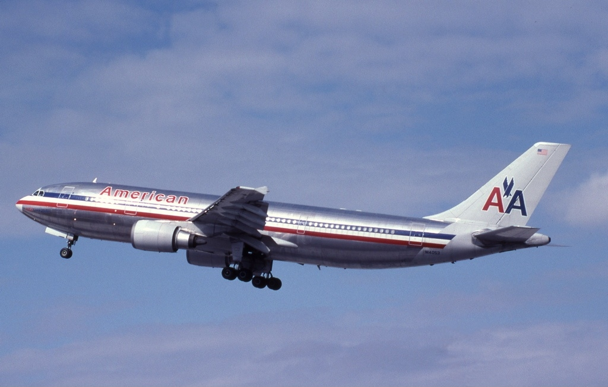

Too much rudder - American Airlines flight 587
Safety
20 June 2021
American Airlines flight 587 is a lesser-known accident, since it occured in the immediate wake of 9/11, but it was still one of the deadliest in Aviation history.
On November 12, 2001, barely two months after 9/11, an Airbus A300, N14053 of American Airlines, was scheduled for a flight from New York/Kennedy to Santo Domingo, in the Dominican Republic. The prior flight on this aircraft was uneventful.
At 7:10 AM, local time, the aircraft was fueled by ramp agents. Walkarounds were completed both by the crew and by ramp agents, who found no abnormalities. At some time between 7:30 and 8:00, maintenance was called as there was an issue with the number 2 yaw damper. Resetting the circuit breaker was enough to fix the problem. The pre-flight preparations continued as normal and the flight pushed back at 9:00, after an hour delay.
This morning, the weather was VMC (visual meteorological conditions). The first officer was the pilot flying and the captain was the pilot monitoring.
During pushback, flight controls were checked routinely, and no issues were found with the rudders or any other flight controls. The aircraft taxis to runway 31L, following a Japan Airlines 747 (JAL47). The 747 is cleared for takeoff at 9:11, and AA587 is cleared for takeoff two minutes later. The first officer was concerned about the separation distance between the two aircraft, but the captain was not worried, and assured him that JAL47 would be 5 miles away from them by the time they take off.
AA587 took off and began their initial climb; ATC instructed them to fly the bridge climb then contact New York Departure; the same (often used at JFK) departure procedure that JAL followed. American 587 climbs to 500ft and enters a climbing left turn to a heading of 220 degrees. They then contact departure at 9:15, stating that they are at 1,300 feet climbing to 5,000 feet. Departure tells them to climb and maintain 13,000 feet.
The captain then announces to the first officer that the aircraft is clean - meaning no landing gears, flaps, or slats are extended. At 9:15, the aircraft is climbing through 1,700 feet in a wings-level attitude. They are instructed to proceed direct to the WAVEY waypoint, which is the final ATC transmission for the aircraft.
N14053, Airbus A300-605R, the aircraft that was involved in American Airlines flight 587. Photo by Jon Proctor, GNU FDL 1.2
During the turn towards the WAVEY intersection, the aircraft experiences some wake turbulence from the preceding JAL 747 at an altitude of 2,300 feet. The first officer responds by using rudder inputs to correct the effects. He also asks the captain to increase the airspeed to 250 knots, the maximum speed allowed by the FAA for flight under 10,000 feet. As the first officer struggles with the aircraft, it enters an unusual attitude as his flight control inputs become larger and larger. He calls for the captain to add full power, though he never actually does this.
During the attempted recovery, the right main attachment point of the vertical stabilizer snaps and fractures. It then completely separates from the aircraft and falls to the ground. Without this critical flight control surface, the pilots lose control of the aircraft as it plummets to the ground. The aerodynamic loading became so large that both of the engines fell off. The entire struggle lasted for about one minute, and the aircraft impacted the ground at 9:16 on Beach 131st St., Queens.
Why did this accident happen? While pilots try to avoid wake turbulence encounters, the issues occur mainly with smaller aircraft, and the A300 is not a small aircraft. Some wake turbulence encounters can be severe and result in unusual attitudes, but in this case, analysis of the flight data recorders showed that the encounter was not severe enough to justify the response by the first officer.
Some of the factors that played a role in the accident include:
- Training: American Airlines' training program taught its pilots to respond to wake turbulence events using rudder inputs, which the first officer evidently followed in this case. This leads to the question, why was the training program designed like this? Many student pilots have the habit of not using enough rudder, and are constantly being reminded to use more. Naturally, it would seem like using a sufficient amount of rudder is a good thing, but this accident was an example of what can happen if you use too much. "I didn't know any better" is usually a terrible excuse for anything, and training programs are typically developed using a fair amount of research. Where did American Airlines fall short when designing their training programs, and how could this have been avoided?
- The aircraft: another factor in this accident was the design of the empennage (tail assembly) of the A300. Under high loads, any part on any aircraft is prone to structural damage or weakening. However, the first officer may not have been completely aware of the load factors that could critically damage the vertical stabilizer and/or rudder on the A300. The rudder pedals were also very sensitive and it may have been easy for an airman to use excessive rudder input during a tense situation.
Recommendations in light of the accident include:
- Consider setting laws/regulations for yaw axis safety and rudder pedal sensitivity.
- Review existing rudder systems and evaluate their safety.
- Consider options for modifying the A300 to avoid similar accidents.
- Warn airline transport pilots against using alternating full rudder inputs in a transport-category aircraft, as it is not necessary.
- Update documentation that flying at or below maneuvering speed is not necessarily a protection against structural damage due to full control inputs.
- Update documentation to aid and guide trainers in upset recovery training.
- Train pilots to avoid using full rudder deflection, but to still use appropriate rudder inputs in the right circumstances as necessary.
- Add and/or enhance new flight data recorders to A300 and B747 aircraft to aid in investigation.
References
- "ASN Aircraft accident Airbus A300B4-605R N14053 Belle Harbor, NY". Aviation Safety Network. https://aviation-safety.net/database/record.php?id=20011112-0.
- Bella, Timothy, and Benjamin Fearnow. "Remembering America's Second-Deadliest Plane Crash". The Atlantic, 2011. https://www.theatlantic.com/national/archive/2011/11/remembering-americas-second-deadliest-plane-crash/248313/.
- "In-Flight Separation of Vertical Stabilizer, American Airlines Flight 587, Airbus Industrie A300-605R, N14053, Belle Harbor, New York, November 12, 2001". National Transportation Safety Board, 2004. NTSB/AAR-04/04; PB2004-910404; Notation 7439B.